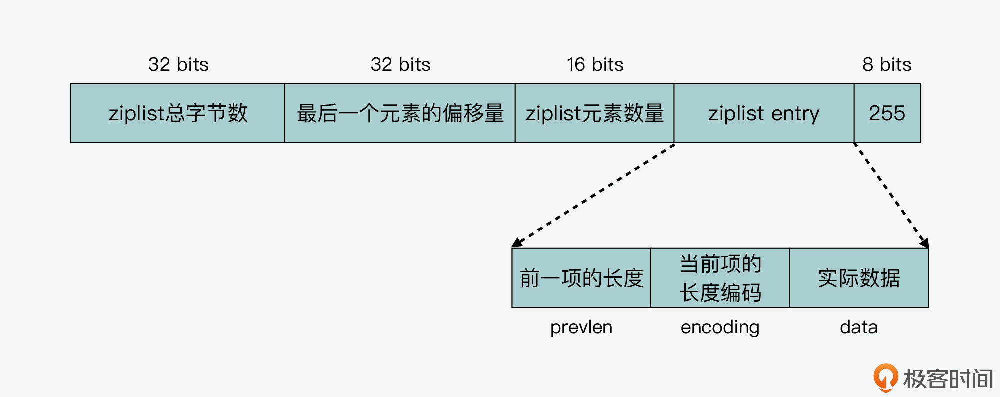
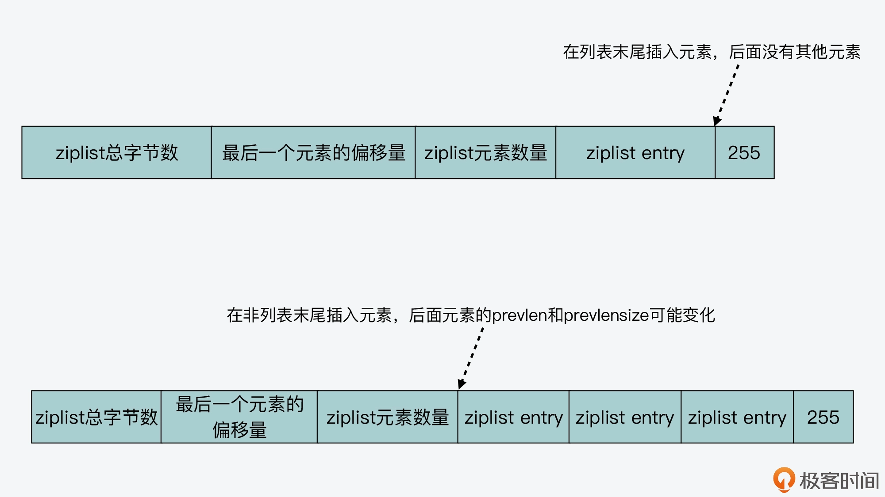
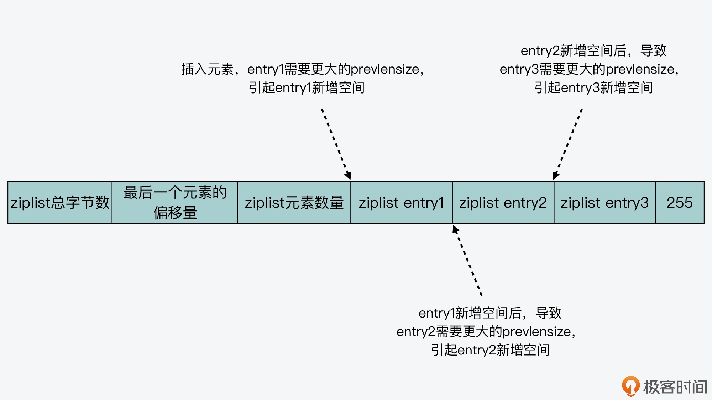
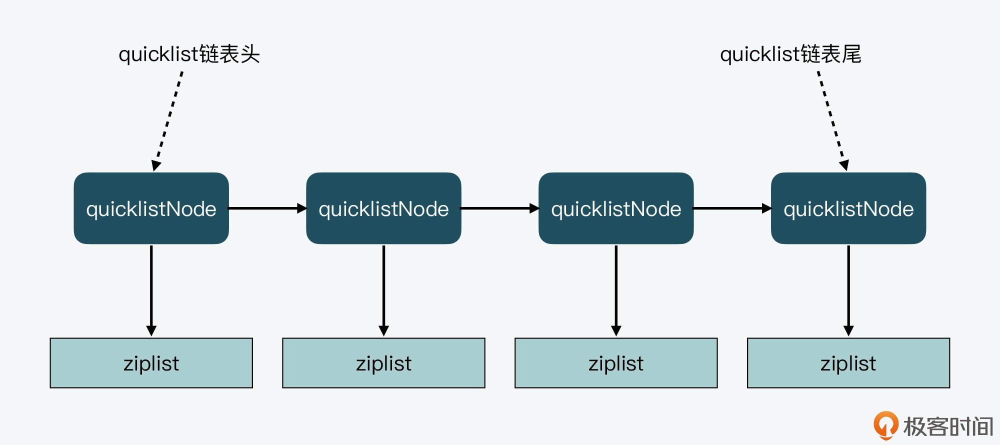
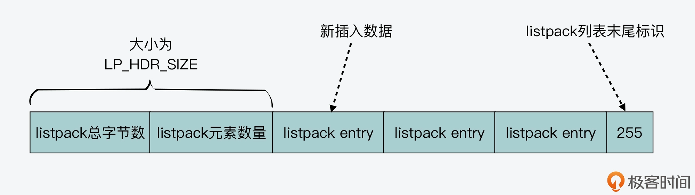
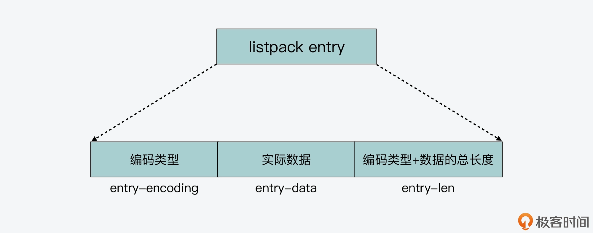
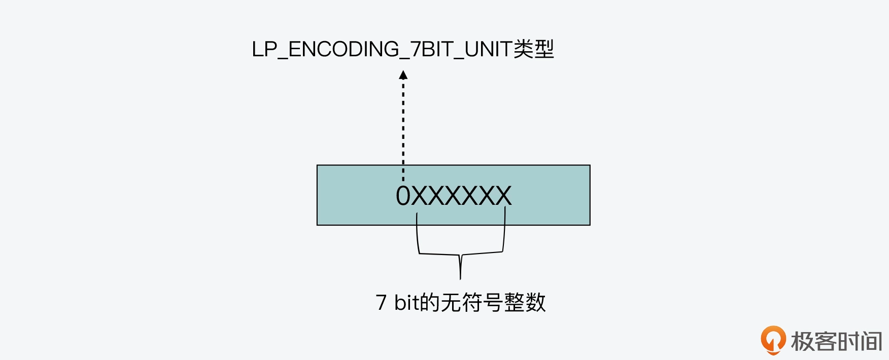
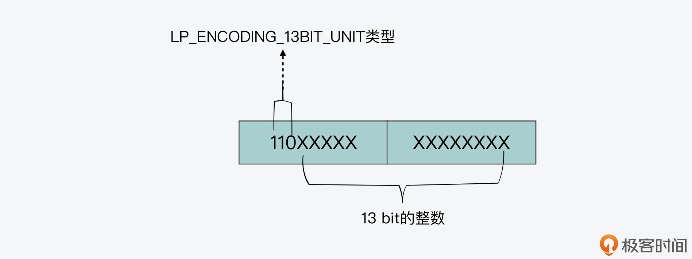
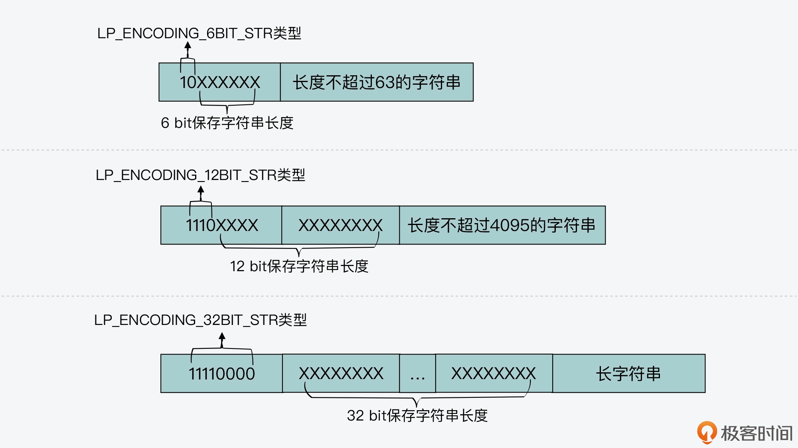
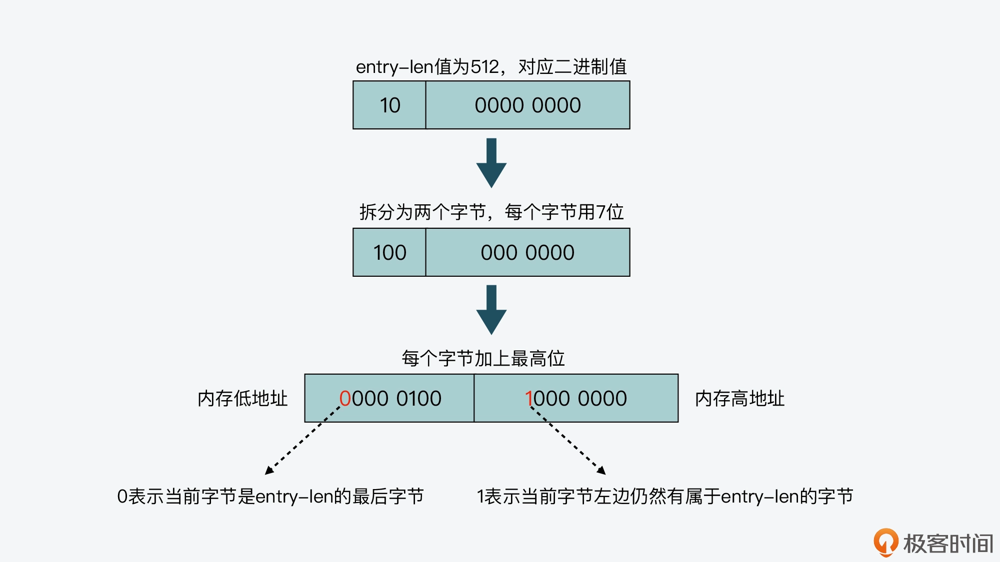

- 00 开篇词 阅读Redis源码能给你带来什么？.md.html
- 01 带你快速攻略Redis源码的整体架构.md.html
- 02 键值对中字符串的实现，用char还是结构体？.md.html
- 03 如何实现一个性能优异的Hash表？.md.html
- 04 内存友好的数据结构该如何细化设计？.md.html
- 05 有序集合为何能同时支持点查询和范围查询？.md.html
- 06 从ziplist到quicklist，再到listpack的启发.md.html
- 07 为什么Stream使用了Radix Tree？.md.html
- 08 Redis server启动后会做哪些操作？.md.html
- 09 Redis事件驱动框架（上）：何时使用select、poll、epoll？.md.html
- 10 Redis事件驱动框架（中）：Redis实现了Reactor模型吗？.md.html
- 11 Redis事件驱动框架（下）：Redis有哪些事件？.md.html
- 12 Redis真的是单线程吗？.md.html
- 13 Redis 6.0多IO线程的效率提高了吗？.md.html
- 14 从代码实现看分布式锁的原子性保证.md.html
- 15 为什么LRU算法原理和代码实现不一样？.md.html
- 16 LFU算法和其他算法相比有优势吗？.md.html
- 17 Lazy Free会影响缓存替换吗？.md.html
- 18 如何生成和解读RDB文件？.md.html
- 19 AOF重写（上）：触发时机与重写的影响.md.html
- 20 AOF重写（下）：重写时的新写操作记录在哪里？.md.html
- 21 主从复制：基于状态机的设计与实现.md.html
- 22 哨兵也和Redis实例一样初始化吗？.md.html
- 23 从哨兵Leader选举学习Raft协议实现（上）.md.html
- 24 从哨兵Leader选举学习Raft协议实现（下）.md.html
- 25 PubSub在主从故障切换时是如何发挥作用的？.md.html
- 26 从Ping-Pong消息学习Gossip协议的实现.md.html
- 27 从MOVED、ASK看集群节点如何处理命令？.md.html
- 28 Redis Cluster数据迁移会阻塞吗？.md.html
- 29 如何正确实现循环缓冲区？.md.html
- 30 如何在系统中实现延迟监控？.md.html
- 31 从Module的实现学习动态扩展功能.md.html
- 32 如何在一个系统中实现单元测试？.md.html
- 结束语 Redis源码阅读，让我们从新开始.md.html
- 捐赠
06 从ziplist到quicklist，再到listpack的启发
在前面的【第 4 讲】，我介绍 Redis 优化设计数据结构来提升内存利用率的时候，提到可以使用压缩列表（ziplist）来保存数据。所以现在你应该也知道，ziplist 的最大特点，就是它被设计成一种内存紧凑型的数据结构，占用一块连续的内存空间，以达到节省内存的目的。
但是，在计算机系统中，任何一个设计都是有利有弊的。对于 ziplist 来说，这个道理同样成立。
虽然 ziplist 节省了内存开销，可它也存在两个设计代价：一是不能保存过多的元素，否则访问性能会降低；二是不能保存过大的元素，否则容易导致内存重新分配，甚至可能引发连锁更新的问题。所谓的连锁更新，简单来说，就是 ziplist 中的每一项都要被重新分配内存空间，造成 ziplist 的性能降低。
因此，针对 ziplist 在设计上的不足，Redis 代码在开发演进的过程中，新增设计了两种数据结构：quicklist 和 listpack。这两种数据结构的设计目标，就是尽可能地保持 ziplist 节省内存的优势，同时避免 ziplist 潜在的性能下降问题。
今天这节课，我就来给你详细介绍下 quicklist 和 listpack 的设计思想和实现思路，不过在具体讲解这两种数据结构之前，我想先带你来了解下为什么 ziplist 的设计会存在缺陷。这样一来，你在学习 quicklist 和 listpack 时，可以和 ziplist 的设计进行对比，进一步就能更加容易地掌握 quicklist 和 listpack 的设计考虑了。
而且，ziplist 和 quicklist 的区别，也是经常被问到的面试题，而 listpack 数据结构因为比较新，你对它的设计实现可能了解得并不多。那在学完了这节课之后，你其实就可以很轻松地应对这三种数据结构的使用问题了。此外，你还可以从这三种数据结构的逐步优化设计中，学习到 Redis 数据结构在内存开销和访问性能之间，采取的设计取舍思想。如果你需要开发高效的数据结构，你就可以把这种设计思想应用起来。
好，那么接下来，我们就先来了解下 ziplist 在设计与实现上存在的缺陷。
ziplist 的不足
你已经知道，一个 ziplist 数据结构在内存中的布局，就是一块连续的内存空间。这块空间的起始部分是大小固定的 10 字节元数据，其中记录了 ziplist 的总字节数、最后一个元素的偏移量以及列表元素的数量，而这 10 字节后面的内存空间则保存了实际的列表数据。在 ziplist 的最后部分，是一个 1 字节的标识（固定为 255），用来表示 ziplist 的结束，如下图所示：

不过，虽然 ziplist 通过紧凑的内存布局来保存数据，节省了内存空间，但是 ziplist 也面临着随之而来的两个不足：查找复杂度高和潜在的连锁更新风险。那么下面，我们就分别来了解下这两个问题。
查找复杂度高
因为 ziplist 头尾元数据的大小是固定的，并且在 ziplist 头部记录了最后一个元素的位置，所以，当在 ziplist 中查找第一个或最后一个元素的时候，就可以很快找到。
但问题是，当要查找列表中间的元素时，ziplist 就得从列表头或列表尾遍历才行。而当 ziplist 保存的元素过多时，查找中间数据的复杂度就增加了。更糟糕的是，如果 ziplist 里面保存的是字符串，ziplist 在查找某个元素时，还需要逐一判断元素的每个字符，这样又进一步增加了复杂度。
也正因为如此，我们在使用 ziplist 保存 Hash 或 Sorted Set 数据时，都会在 redis.conf 文件中，通过 hash-max-ziplist-entries 和 zset-max-ziplist-entries 两个参数，来控制保存在 ziplist 中的元素个数。
不仅如此，除了查找复杂度高以外，ziplist 在插入元素时，如果内存空间不够了，ziplist 还需要重新分配一块连续的内存空间，而这还会进一步引发连锁更新的问题。
连锁更新风险
我们知道，因为 ziplist 必须使用一块连续的内存空间来保存数据，所以当新插入一个元素时，ziplist 就需要计算其所需的空间大小，并申请相应的内存空间。这一系列操作，我们可以从 ziplist 的元素插入函数 __ziplistInsert 中看到。
__ziplistInsert 函数首先会计算获得当前 ziplist 的长度，这个步骤通过 ZIPLIST_BYTES 宏定义就可以完成，如下所示。同时，该函数还声明了 reqlen 变量，用于记录插入元素后所需的新增空间大小。
//获取当前ziplist长度curlen；声明reqlen变量，用来记录新插入元素所需的长度
size_t curlen = intrev32ifbe(ZIPLIST_BYTES(zl)), reqlen;
然后，__ziplistInsert 函数会判断当前要插入的位置是否是列表末尾。如果不是末尾，那么就需要获取位于当前插入位置的元素的 prevlen 和 prevlensize。这部分代码如下所示：
//如果插入的位置不是ziplist末尾，则获取前一项长度
if (p[0] != ZIP_END) {
ZIP_DECODE_PREVLEN(p, prevlensize, prevlen);
} else {
…
}
实际上，在 ziplist 中，每一个元素都会记录其前一项的长度，也就是 prevlen。然后，为了节省内存开销，ziplist 会使用不同的空间记录 prevlen，这个 prevlen 空间大小就是 prevlensize。
举个简单的例子，当在一个元素 A 前插入一个新的元素 B 时，A 的 prevlen 和 prevlensize 都要根据 B 的长度进行相应的变化。
那么现在，我们假设 A 的 prevlen 原本只占用 1 字节（也就是 prevlensize 等于 1），而能记录的前一项长度最大为 253 字节。此时，如果 B 的长度超过了 253 字节，A 的 prevlen 就需要使用 5 个字节来记录（prevlen 具体的编码方式，你可以复习回顾下第 4 讲），这样就需要申请额外的 4 字节空间了。不过，如果元素 B 的插入位置是列表末尾，那么插入元素 B 时，我们就不用考虑后面元素的 prevlen 了。
我画了下面这张图，以便于你理解数据插入过程对插入位置元素的影响。

因此，为了保证 ziplist 有足够的内存空间，来保存插入元素以及插入位置元素的 prevlen 信息，__ziplistInsert 函数在获得插入位置元素的 prevlen 和 prevlensize 后，紧接着就会计算插入元素的长度。
现在我们已知，一个 ziplist 元素包括了 prevlen、encoding 和实际数据 data 三个部分。所以，在计算插入元素的所需空间时，__ziplistInsert 函数也会分别计算这三个部分的长度。这个计算过程一共可以分成四步来完成。
- 第一步，计算实际插入元素的长度。
首先你要知道，这个计算过程和插入元素是整数还是字符串有关。__ziplistInsert 函数会先调用 zipTryEncoding 函数，这个函数会判断插入元素是否为整数。如果是整数，就按照不同的整数大小，计算 encoding 和实际数据 data 各自所需的空间；如果是字符串，那么就先把字符串长度记录为所需的新增空间大小。这一过程的代码如下所示：
if (zipTryEncoding(s,slen,&value,&encoding)) {
reqlen = zipIntSize(encoding);
} else {
reqlen = slen;
}
- 第二步，调用 zipStorePrevEntryLength 函数，将插入位置元素的 prevlen 也计算到所需空间中。
这是因为在插入元素后，__ziplistInsert 函数可能要为插入位置的元素分配新增空间。这部分代码如下所示：
reqlen += zipStorePrevEntryLength(NULL,prevlen);
- 第三步，调用 zipStoreEntryEncoding 函数，根据字符串的长度，计算相应 encoding 的大小。
在刚才的第一步中，ziplistInsert 函数对于字符串数据，只是记录了字符串本身的长度，所以在第三步中，ziplistInsert 函数还会调用 zipStoreEntryEncoding 函数，根据字符串的长度来计算相应的 encoding 大小，如下所示：
reqlen += zipStoreEntryEncoding(NULL,encoding,slen);
好了，到这里，__ziplistInsert 函数就已经在 reqlen 变量中，记录了插入元素的 prevlen 长度、encoding 大小，以及实际数据 data 的长度。这样一来，插入元素的整体长度就有了，这也是插入位置元素的 prevlen 所要记录的大小。
- 第四步，调用 zipPrevLenByteDiff 函数，判断插入位置元素的 prevlen 和实际所需的 prevlen 大小。
最后，__ziplistInsert 函数会调用 zipPrevLenByteDiff 函数，用来判断插入位置元素的 prevlen 和实际所需的 prevlen，这两者间的大小差别。这部分代码如下所示，prevlen 的大小差别是使用 nextdiff 来记录的：
nextdiff = (p[0] != ZIP_END) ? zipPrevLenByteDiff(p,reqlen) : 0;
那么在这里，如果 nextdiff 大于 0，就表明插入位置元素的空间不够，需要新增 nextdiff 大小的空间，以便能保存新的 prevlen。然后，__ziplistInsert 函数在新增空间时，就会调用 ziplistResize 函数，来重新分配 ziplist 所需的空间。
ziplistResize 函数接收的参数分别是待重新分配的 ziplist 和重新分配的空间大小。而 __ziplistInsert 函数传入的重新分配大小的参数，是三个长度之和。
那么是哪三个长度之和呢？
这三个长度分别是 ziplist 现有大小（curlen）、待插入元素自身所需的新增空间（reqlen），以及插入位置元素 prevlen 所需的新增空间（nextdiff）。下面的代码显示了 ziplistResize 函数的调用和参数传递逻辑：
zl = ziplistResize(zl,curlen+reqlen+nextdiff);
进一步，那么 ziplistResize 函数在获得三个长度总和之后，具体是如何扩容呢？
我们可以进一步看下 ziplistResize 函数的实现，这个函数会调用 zrealloc 函数，来完成空间的重新分配，而重新分配的空间大小就是由传入参数 len 决定的。这样，我们就了解到了 ziplistResize 函数涉及到内存分配操作，因此如果我们往 ziplist 频繁插入过多数据的话，就可能引起多次内存分配，从而会对 Redis 性能造成影响。
下面的代码显示了 ziplistResize 函数的部分实现，你可以看下。
unsigned char *ziplistResize(unsigned char *zl, unsigned int len) {
//对zl进行重新内存空间分配，重新分配的大小是len
zl = zrealloc(zl,len);
…
zl[len-1] = ZIP_END;
return zl;
}
好了，到这里，我们就了解了 ziplist 在新插入元素时，会计算其所需的新增空间，并进行重新分配。而当新插入的元素较大时，就会引起插入位置的元素 prevlensize 增加，进而就会导致插入位置的元素所占空间也增加。
而如此一来，这种空间新增就会引起连锁更新的问题。
实际上，所谓的连锁更新，就是指当一个元素插入后，会引起当前位置元素新增 prevlensize 的空间。而当前位置元素的空间增加后，又会进一步引起该元素的后续元素，其 prevlensize 所需空间的增加。
这样，一旦插入位置后续的所有元素，都会因为前序元素的 prevlenszie 增加，而引起自身空间也要增加，这种每个元素的空间都需要增加的现象，就是连锁更新。我画了下面这张图，你可以看下。

连锁更新一旦发生，就会导致 ziplist 占用的内存空间要多次重新分配，这就会直接影响到 ziplist 的访问性能。
所以说，虽然 ziplist 紧凑型的内存布局能节省内存开销，但是如果保存的元素数量增加了，或是元素变大了，ziplist 就会面临性能问题。那么，有没有什么方法可以避免 ziplist 的问题呢？
这就是接下来我要给你介绍的 quicklist 和 listpack，这两种数据结构的设计思想了。
quicklist 设计与实现
我们先来学习下 quicklist 的实现思路。
quicklist 的设计，其实是结合了链表和 ziplist 各自的优势。简单来说，一个 quicklist 就是一个链表，而链表中的每个元素又是一个 ziplist。
我们来看下 quicklist 的数据结构，这是在quicklist.h文件中定义的，而 quicklist 的具体实现是在quicklist.c文件中。
首先，quicklist 元素的定义，也就是 quicklistNode。因为 quicklist 是一个链表，所以每个 quicklistNode 中，都包含了分别指向它前序和后序节点的指针*prev和*next。同时，每个 quicklistNode 又是一个 ziplist，所以，在 quicklistNode 的结构体中，还有指向 ziplist 的指针*zl。
此外，quicklistNode 结构体中还定义了一些属性，比如 ziplist 的字节大小、包含的元素个数、编码格式、存储方式等。下面的代码显示了 quicklistNode 的结构体定义，你可以看下。
typedef struct quicklistNode {
struct quicklistNode *prev; //前一个quicklistNode
struct quicklistNode *next; //后一个quicklistNode
unsigned char *zl; //quicklistNode指向的ziplist
unsigned int sz; //ziplist的字节大小
unsigned int count : 16; //ziplist中的元素个数
unsigned int encoding : 2; //编码格式，原生字节数组或压缩存储
unsigned int container : 2; //存储方式
unsigned int recompress : 1; //数据是否被压缩
unsigned int attempted_compress : 1; //数据能否被压缩
unsigned int extra : 10; //预留的bit位
} quicklistNode;
了解了 quicklistNode 的定义，我们再来看下 quicklist 的结构体定义。
quicklist 作为一个链表结构，在它的数据结构中，是定义了整个 quicklist 的头、尾指针，这样一来，我们就可以通过 quicklist 的数据结构，来快速定位到 quicklist 的链表头和链表尾。
此外，quicklist 中还定义了 quicklistNode 的个数、所有 ziplist 的总元素个数等属性。quicklist 的结构定义如下所示：
typedef struct quicklist {
quicklistNode *head; //quicklist的链表头
quicklistNode *tail; //quicklist的链表尾
unsigned long count; //所有ziplist中的总元素个数
unsigned long len; //quicklistNodes的个数
...
} quicklist;
然后，从 quicklistNode 和 quicklist 的结构体定义中，我们就能画出下面这张 quicklist 的示意图。

而也正因为 quicklist 采用了链表结构，所以当插入一个新的元素时，quicklist 首先就会检查插入位置的 ziplist 是否能容纳该元素，这是通过 _quicklistNodeAllowInsert 函数来完成判断的。
_quicklistNodeAllowInsert 函数会计算新插入元素后的大小（new_sz），这个大小等于 quicklistNode 的当前大小（node->sz）、插入元素的大小（sz），以及插入元素后 ziplist 的 prevlen 占用大小。
在计算完大小之后，_quicklistNodeAllowInsert 函数会依次判断新插入的数据大小（sz）是否满足要求，即单个 ziplist 是否不超过 8KB，或是单个 ziplist 里的元素个数是否满足要求。
只要这里面的一个条件能满足，quicklist 就可以在当前的 quicklistNode 中插入新元素，否则 quicklist 就会新建一个 quicklistNode，以此来保存新插入的元素。
下面代码显示了是否允许在当前 quicklistNode 插入数据的判断逻辑，你可以看下。
unsigned int new_sz = node->sz + sz + ziplist_overhead;
if (likely(_quicklistNodeSizeMeetsOptimizationRequirement(new_sz, fill)))
return 1;
else if (!sizeMeetsSafetyLimit(new_sz))
return 0;
else if ((int)node->count < fill)
return 1;
else
return 0;
这样一来，quicklist 通过控制每个 quicklistNode 中，ziplist 的大小或是元素个数，就有效减少了在 ziplist 中新增或修改元素后，发生连锁更新的情况，从而提供了更好的访问性能。
而 Redis 除了设计了 quicklist 结构来应对 ziplist 的问题以外，还在 5.0 版本中新增了 listpack 数据结构，用来彻底避免连锁更新。下面我们就继续来学习下它的设计实现思路。
listpack 设计与实现
listpack 也叫紧凑列表，它的特点就是用一块连续的内存空间来紧凑地保存数据，同时为了节省内存空间，listpack 列表项使用了多种编码方式，来表示不同长度的数据，这些数据包括整数和字符串。
和 listpack 相关的实现文件是listpack.c，头文件包括listpack.h和listpack_malloc.h。我们先来看下 listpack 的创建函数 lpNew，因为从这个函数的代码逻辑中，我们可以了解到 listpack 的整体结构。
lpNew 函数创建了一个空的 listpack，一开始分配的大小是 LP_HDR_SIZE 再加 1 个字节。LP_HDR_SIZE 宏定义是在 listpack.c 中，它默认是 6 个字节，其中 4 个字节是记录 listpack 的总字节数，2 个字节是记录 listpack 的元素数量。
此外，listpack 的最后一个字节是用来标识 listpack 的结束，其默认值是宏定义 LP_EOF。和 ziplist 列表项的结束标记一样，LP_EOF 的值也是 255。
unsigned char *lpNew(void) {
//分配LP_HRD_SIZE+1
unsigned char *lp = lp_malloc(LP_HDR_SIZE+1);
if (lp == NULL) return NULL;
//设置listpack的大小
lpSetTotalBytes(lp,LP_HDR_SIZE+1);
//设置listpack的元素个数，初始值为0
lpSetNumElements(lp,0);
//设置listpack的结尾标识为LP_EOF，值为255
lp[LP_HDR_SIZE] = LP_EOF;
return lp;
}
你可以看看下面这张图，展示的就是大小为 LP_HDR_SIZE 的 listpack 头和值为 255 的 listpack 尾。当有新元素插入时，该元素会被插在 listpack 头和尾之间。

好了，了解了 listpack 的整体结构后，我们再来看下 listpack 列表项的设计。
和 ziplist 列表项类似，listpack 列表项也包含了元数据信息和数据本身。不过，为了避免 ziplist 引起的连锁更新问题，listpack 中的每个列表项不再像 ziplist 列表项那样，保存其前一个列表项的长度，它只会包含三个方面内容，分别是当前元素的编码类型（entry-encoding）、元素数据 (entry-data)，以及编码类型和元素数据这两部分的长度 (entry-len)，如下图所示。

这里，关于 listpack 列表项的设计，你需要重点掌握两方面的要点，分别是列表项元素的编码类型，以及列表项避免连锁更新的方法。下面我就带你具体了解下。
listpack 列表项编码方法
我们先来看下 listpack 元素的编码类型。如果你看了 listpack.c 文件，你会发现该文件中有大量类似 LP_ENCODINGXX_BIT_INT 和 LP_ENCODINGXX_BIT_STR 的宏定义，如下所示：
#define LP_ENCODING_7BIT_UINT 0
#define LP_ENCODING_6BIT_STR 0x80
#define LP_ENCODING_13BIT_INT 0xC0
...
#define LP_ENCODING_64BIT_INT 0xF4
#define LP_ENCODING_32BIT_STR 0xF0
这些宏定义其实就对应了 listpack 的元素编码类型。具体来说，listpack 元素会对不同长度的整数和字符串进行编码，这里我们分别来看下。
首先，对于整数编码来说，当 listpack 元素的编码类型为 LP_ENCODING_7BIT_UINT 时，表示元素的实际数据是一个 7 bit 的无符号整数。又因为 LP_ENCODING_7BIT_UINT 本身的宏定义值为 0，所以编码类型的值也相应为 0，占 1 个 bit。
此时，编码类型和元素实际数据共用 1 个字节，这个字节的最高位为 0，表示编码类型，后续的 7 位用来存储 7 bit 的无符号整数，如下图所示：

而当编码类型为 LP_ENCODING_13BIT_INT 时，这表示元素的实际数据是 13 bit 的整数。同时，因为 LP_ENCODING_13BIT_INT 的宏定义值为 0xC0，转换为二进制值是 1100 0000，所以，这个二进制值中的后 5 位和后续的 1 个字节，共 13 位，会用来保存 13bit 的整数。而该二进制值中的前 3 位 110，则用来表示当前的编码类型。我画了下面这张图，你可以看下。

好，在了解了 LP_ENCODING_7BIT_UINT 和 LP_ENCODING_13BIT_INT 这两种编码类型后，剩下的 LP_ENCODING_16BIT_INT、LP_ENCODING_24BIT_INT、LP_ENCODING_32BIT_INT 和 LP_ENCODING_64BIT_INT，你应该也就能知道它们的编码方式了。
这四种类型是分别用 2 字节（16 bit）、3 字节（24 bit）、4 字节（32 bit）和 8 字节（64 bit）来保存整数数据。同时，它们的编码类型本身占 1 字节，编码类型值分别是它们的宏定义值。
然后，对于字符串编码来说，一共有三种类型，分别是 LP_ENCODING_6BIT_STR、LP_ENCODING_12BIT_STR 和 LP_ENCODING_32BIT_STR。从刚才的介绍中，你可以看到，整数编码类型名称中 BIT 前面的数字，表示的是整数的长度。因此类似的，字符串编码类型名称中 BIT 前的数字，表示的就是字符串的长度。
比如，当编码类型为 LP_ENCODING_6BIT_STR 时，编码类型占 1 字节。该类型的宏定义值是 0x80，对应的二进制值是 1000 0000，这其中的前 2 位是用来标识编码类型本身，而后 6 位保存的是字符串长度。然后，列表项中的数据部分保存了实际的字符串。
下面的图展示了三种字符串编码类型和数据的布局，你可以看下。

listpack 避免连锁更新的实现方式
最后，我们再来了解下 listpack 列表项是如何避免连锁更新的。
在 listpack 中，因为每个列表项只记录自己的长度，而不会像 ziplist 中的列表项那样，会记录前一项的长度。所以，当我们在 listpack 中新增或修改元素时，实际上只会涉及每个列表项自己的操作，而不会影响后续列表项的长度变化，这就避免了连锁更新。
不过，你可能会有疑问：如果 listpack 列表项只记录当前项的长度，那么 listpack 支持从左向右正向查询列表，或是从右向左反向查询列表吗？
其实，listpack 是能支持正、反向查询列表的。
当应用程序从左向右正向查询 listpack 时，我们可以先调用 lpFirst 函数。该函数的参数是指向 listpack 头的指针，它在执行时，会让指针向右偏移 LP_HDR_SIZE 大小，也就是跳过 listpack 头。你可以看下 lpFirst 函数的代码，如下所示：
unsigned char *lpFirst(unsigned char *lp) {
lp += LP_HDR_SIZE; //跳过listpack头部6个字节
if (lp[0] == LP_EOF) return NULL; //如果已经是listpack的末尾结束字节，则返回NULL
return lp;
}
然后，再调用 lpNext 函数，该函数的参数包括了指向 listpack 某个列表项的指针。lpNext 函数会进一步调用 lpSkip 函数，并传入当前列表项的指针，如下所示：
unsigned char *lpNext(unsigned char *lp, unsigned char *p) {
...
p = lpSkip(p); //调用lpSkip函数，偏移指针指向下一个列表项
if (p[0] == LP_EOF) return NULL;
return p;
}
最后，lpSkip 函数会先后调用 lpCurrentEncodedSize 和 lpEncodeBacklen 这两个函数。
lpCurrentEncodedSize 函数是根据当前列表项第 1 个字节的取值，来计算当前项的编码类型，并根据编码类型，计算当前项编码类型和实际数据的总长度。然后，lpEncodeBacklen 函数会根据编码类型和实际数据的长度之和，进一步计算列表项最后一部分 entry-len 本身的长度。
这样一来，lpSkip 函数就知道当前项的编码类型、实际数据和 entry-len 的总长度了，也就可以将当前项指针向右偏移相应的长度，从而实现查到下一个列表项的目的。
下面代码展示了 lpEncodeBacklen 函数的基本计算逻辑，你可以看下。
unsigned long lpEncodeBacklen(unsigned char *buf, uint64_t l) {
//编码类型和实际数据的总长度小于等于127，entry-len长度为1字节
if (l <= 127) {
...
return 1;
} else if (l < 16383) { //编码类型和实际数据的总长度大于127但小于16383，entry-len长度为2字节
...
return 2;
} else if (l < 2097151) {//编码类型和实际数据的总长度大于16383但小于2097151，entry-len长度为3字节
...
return 3;
} else if (l < 268435455) { //编码类型和实际数据的总长度大于2097151但小于268435455，entry-len长度为4字节
...
return 4;
} else { //否则，entry-len长度为5字节
...
return 5;
}
}
我也画了一张图，展示了从左向右遍历 listpack 的基本过程，你可以再回顾下。

好，了解了从左向右正向查询 listpack，我们再来看下从右向左反向查询 listpack。
首先，我们根据 listpack 头中记录的 listpack 总长度，就可以直接定位到 listapck 的尾部结束标记。然后，我们可以调用 lpPrev 函数，该函数的参数包括指向某个列表项的指针，并返回指向当前列表项前一项的指针。
lpPrev 函数中的关键一步就是调用 lpDecodeBacklen 函数。lpDecodeBacklen 函数会从右向左，逐个字节地读取当前列表项的 entry-len。
那么，lpDecodeBacklen 函数如何判断 entry-len 是否结束了呢？
这就依赖于 entry-len 的编码方式了。entry-len 每个字节的最高位，是用来表示当前字节是否为 entry-len 的最后一个字节，这里存在两种情况，分别是：
- 最高位为 1，表示 entry-len 还没有结束，当前字节的左边字节仍然表示 entry-len 的内容；
- 最高位为 0，表示当前字节已经是 entry-len 最后一个字节了。
而 entry-len 每个字节的低 7 位，则记录了实际的长度信息。这里你需要注意的是，entry-len 每个字节的低 7 位采用了大端模式存储，也就是说，entry-len 的低位字节保存在内存高地址上。
我画了下面这张图，展示了 entry-len 这种特别的编码方式，你可以看下。

实际上，正是因为有了 entry-len 的特别编码方式，lpDecodeBacklen 函数就可以从当前列表项起始位置的指针开始，向左逐个字节解析，得到前一项的 entry-len 值。这也是 lpDecodeBacklen 函数的返回值。而从刚才的介绍中，我们知道 entry-len 记录了编码类型和实际数据的长度之和。
因此，lpPrev 函数会再调用 lpEncodeBacklen 函数，来计算得到 entry-len 本身长度，这样一来，我们就可以得到前一项的总长度，而 lpPrev 函数也就可以将指针指向前一项的起始位置了。所以按照这个方法，listpack 就实现了从右向左的查询功能。
小结
这节课，我从 ziplist 的设计不足出发，依次给你介绍了 quicklist 和 listpack 的设计思想。
你要知道，ziplist 的不足主要在于一旦 ziplist 中元素个数多了，它的查找效率就会降低。而且如果在 ziplist 里新增或修改数据，ziplist 占用的内存空间还需要重新分配；更糟糕的是，ziplist 新增某个元素或修改某个元素时，可能会导致后续元素的 prevlen 占用空间都发生变化，从而引起连锁更新问题，导致每个元素的空间都要重新分配，这就会导致 ziplist 的访问性能下降。
所以，为了应对 ziplist 的问题，Redis 先是在 3.0 版本中设计实现了 quicklist。quicklist 结构在 ziplist 基础上，使用链表将 ziplist 串联起来，链表的每个元素就是一个 ziplist。这种设计减少了数据插入时内存空间的重新分配，以及内存数据的拷贝。同时，quicklist 限制了每个节点上 ziplist 的大小，一旦一个 ziplist 过大，就会采用新增 quicklist 节点的方法。
不过，又因为 quicklist 使用 quicklistNode 结构指向每个 ziplist，无疑增加了内存开销。为了减少内存开销，并进一步避免 ziplist 连锁更新问题，Redis 在 5.0 版本中，就设计实现了 listpack 结构。listpack 结构沿用了 ziplist 紧凑型的内存布局，把每个元素都紧挨着放置。
listpack 中每个列表项不再包含前一项的长度了，因此当某个列表项中的数据发生变化，导致列表项长度变化时，其他列表项的长度是不会受影响的，因而这就避免了 ziplist 面临的连锁更新问题。
总而言之，Redis 在内存紧凑型列表的设计与实现上，从 ziplist 到 quicklist，再到 listpack，你可以看到 Redis 在内存空间开销和访问性能之间的设计取舍，这一系列的设计变化，是非常值得你学习的。
每课一问
ziplist 会使用 zipTryEncoding 函数计算插入元素所需的新增内存空间，假设插入的一个元素是整数，你知道 ziplist 能支持的最大整数是多大吗？
欢迎在留言区分享你的答案和思考过程，如果觉得有收获，也欢迎你把今天的内容分享给更多的朋友。
© 2019 - 2023 Liangliang Lee. Powered by gin and hexo-theme-book.